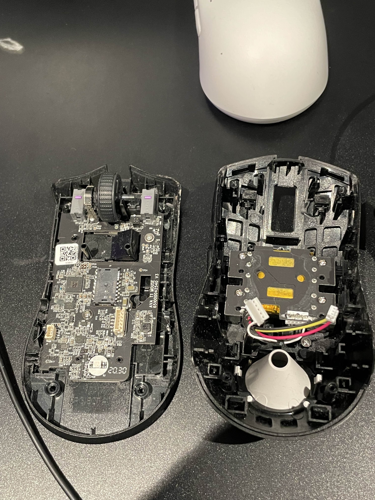

Inledning Ted var en professionell streamer, känd för sina passionerade sändningar på plattformar som Twitch och YouTube. Hans karriär började med höga ambitioner och stora drömmar om att bli en inflytelserik figur inom gaming- och underhållningsvärlden. Trots att han endast hade två lojala tittare under sin karriär, lyckades han bygga en liten men engagerad community. Men trots sina ansträngningar och engagemang slutade hans resa tragiskt.
Bakgrund Ted började streama vid en tidpunkt då konkurrensen inom streamingvärlden var hård. Miljontals människor världen över strömmade och försökte bygga sina egna följarbaser, vilket gjorde det svårt för nya streamare att slå igenom. Trots att Ted hade en genuin passion för gaming och interaktion med sina tittare, kämpade han ständigt med att nå en större publik. Hans kanal var inte känd för att generera stort antal tittare, men hans två tittare var otroligt engagerade, och Ted såg detta som en liten men värdefull prestation.
Streamingens Karriär Ted streamade under flera timmar varje dag, ofta långt efter att han själv var utmattad. Hans program var varierade, från spelgenomgångar till mer interaktiva evenemang där han pratade om livet, populära spel och streamerlivets realiteter. Han var känd för sin humor och förmåga att skapa en personlig koppling till sina två trogna tittare, som han kallade för "de verkliga fansen". Trots hans ihärdiga arbete och engagemang för sin kanal, kämpade Ted med att få sitt innehåll att nå ut till en större publik. Ted försökte ständigt hitta nya sätt att växa och förändra sin strategi för att attrahera fler tittare. Han experimenterade med olika spelsessioner, evenemang och samarbeten med andra streamare, men hans ansträngningar resulterade oftast i samma två tittare. Trots detta fortsatte han att streama, driven av sin kärlek till spelet och sina lojalaste följare.
Tragedin Efter år av kämpande utan större framgång började Ted känna på belastningen av att ständigt vara missförstådd av den större streaminggemenskapen. Hans brist på framgång på de stora plattformarna och hans otaliga timmar framför kameran ledde till en känsla av förlust och ensamhet. Trots att han alltid försökte hålla uppe en positiv attityd inför sina få tittare, började hans mentala hälsa att ta skada. Ted kände att han inte var bra nog för den streamingvärld han drömde om, och den ständiga pressen att prestera blev alltmer överväldigande. En tragisk vändning inträffade när Ted till slut beslutade att avsluta sin streamingkarriär. Hans sista stream var fylld med känslor av både sorg och lättnad. Under den streamen pratade han öppet om sina känslor av utmattning och frustration över att inte ha uppnått sina mål. Hans två tittare var där, men ingen annan såg den sista sändningen. Ted försvann från streamingvärlden på ett tyst och obemärkt sätt. Hans kanal lades ner, och han valde att ta en paus från internet och sin streamingkarriär för att fokusera på sin personliga hälsa.
Slutsats Ted var en streamer som, trots sina begränsade tittarsiffror, verkligen hade en passion för sitt yrke. Hans berättelse är en påminnelse om den ofta osynliga kampen som många skapare möter bakom kulisserna. Streamingvärlden kan vara en tuff och konkurrensutsatt plats, där det är lätt att förlora sig själv i jakten på framgång och erkännande. Ted’s tragiska slut är ett exempel på den mentala och känslomässiga påfrestning som kan följa med att vara en offentlig person på nätet, särskilt när man inte får den uppmärksamhet eller support som man önskar. Hans liv och karriär, hur kort och förlustfylld den än var, påminner oss om vikten av att ta hand om sig själv och söka hjälp när livet på nätet känns överväldigande.
Btw, did i say Ted is a professional streamer?
Ted, the Electrician
